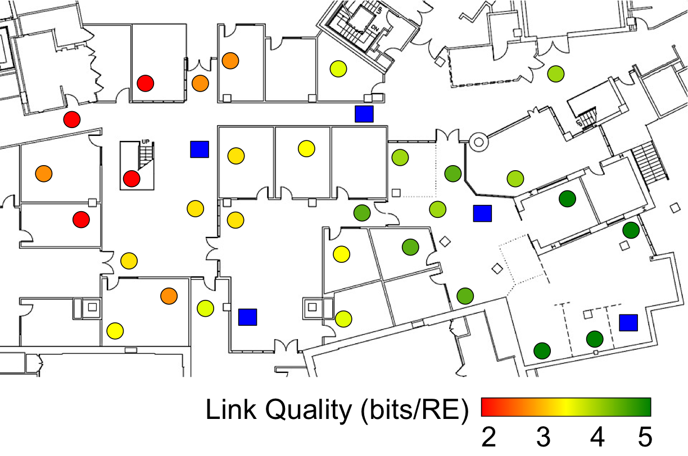

Project LTEye: LTE Radio Analytics Made Easy and Accessible

LTE is a big part of our lives. Yet, its inner workings remain largely opaque to us. LTEye is the first open platform to throw light into the LTE radio layer, without operator support. It discovers the locations of users in the network as well as their service quality. This enables businesses and end-users to visualize user performance in their floorspace and diagnose problems with repeaters or femto cells. LTEye also found deficiencies in production AT&T and Verizon networks, including unprecedented inter-cell interference and inefficient usage of expensive licensed spectrum.
Code
The code for LTEye is available at: LINK
Citation
- LTE Radio Analytics Made Easy and Accessible, Ezzeldin Hamed, Dina Katabi, and Li Erran Li, ACM SIGCOMM 2014 PAPER